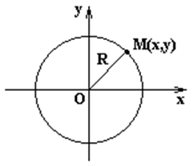
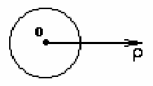
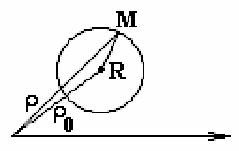
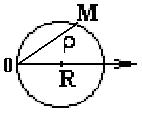

Окружность

Окружность – геометрическое место точек, равноудаленных
от точки  (центр).
(центр).
(центр).
Уравнение окружности
радиуса R с центром в начале координат
-
уравнение окружности радиуса с центром в
начале координат;
Уравнение окружности
со смещенным центром относительно начала координат
-
с центром в точке ;
Параметрическое
уравнение окружности радиуса R со
смещенным центром
-
параметрические уравнения окружности с радиусом и
центром в точке ;

Уравнение
окружности радиуса R с центром
вначале координат
-
уравнение окружности с центром в точке в
полярных координатах;

Уравнение
окружности со смещенным центром в полярной системе координат
-
уравнение окружности с центром в точке в
полярных координатах;

Уравнение
окружности с центром в точке (0,R) радиуса R в полярных координатах